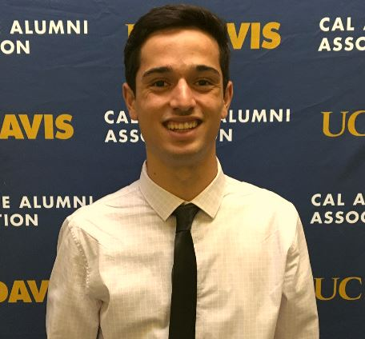
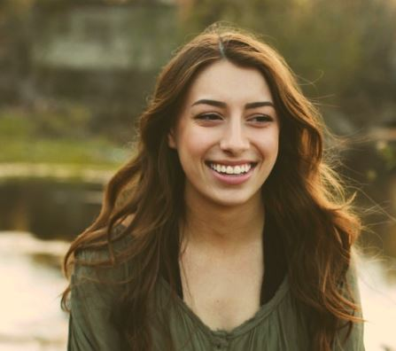
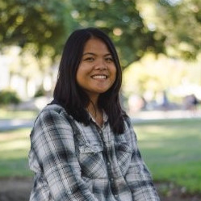

About Our Team
Scott Putty is a civil engineering major that has extensive experience with flood routing and modeling flow conditions in the San Joaquin, Sacramento, and Feather River watersheds. He also participates on the UC Davis ASCE Environmental Project, whose goal is to design and construct an on-site water treatment system in a competition environment.

Alyssa DiGirolamo is a civil and environmental engineering major who participates as a Design Lead for the UC Davis Engineers Without Borders Bolivia Project. This involves designing latrines that the project team will consruct in the vilage of Parque Colani, Bolivia in Summer 2019. She also serves as the Technical Workshop Chair for the club, which involves instructing members on various field activities that members wil need to know prior to traveling to their respective communities.

Nicole Osorio is a civil engineering major who assists Central Valley Modeling Section engineers in maintaining existing and developing new post-processing tools for CalSim and CalLite models. She is also an Officer on the UC Davis ASCE Environmental Project, which involves project management tasks such as conducting chemical analyses, managing team finances, and applying to campus grants.
Olivia Alexander is a civil and environmental engineering major with a minor in sustainability in the built environment. She is currently a research assistant for the UC Davis Department of Civil and Environmental Engineering examining waste-to-energy conversion from cow maure, wastewater, and food waste. Olivia also participated as a Wastewater Intern, which involved the design of pump stations and secondary clarifiers and the creation of process flow diagrams.